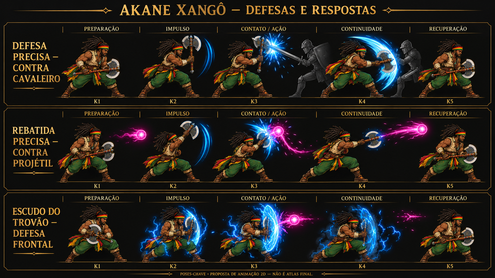

Estrutura de movimento
O esqueleto é uma prévia de articulação. A arte ainda não está recortada e vinculada aos ossos.
Ver modelo neutro de referência
Respostas aos inimigos
Simulação isolada de regras propostas, sem alterar o combate do jogo.

Camadas dos biomas
Estudos de parallax. As 21 pranchas de salas permanecem intactas; chão, colisões e medidas de travessia ainda precisam de montagem.
Raízes do Trovão
Equipamentos personalizam cabo, lâmina e ponteira. A árvore desenvolve técnicas. Custos e valores ainda estão em definição.
Biblioteca sonora piloto
Arquivos gerados para avaliação. Aprovação auditiva e direitos de uso final ainda precisam de revisão.
O que está pronto — e o que ainda exige produção
Esta bancada não é um build do Unity e não conclui os gates de Android, desempenho, arte final ou release.